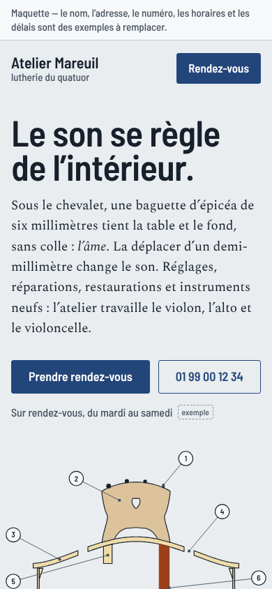
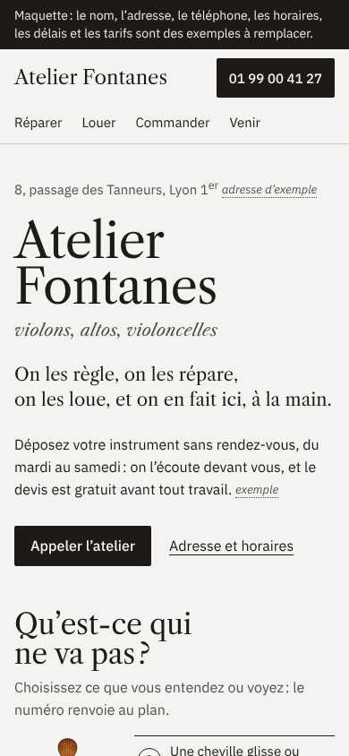
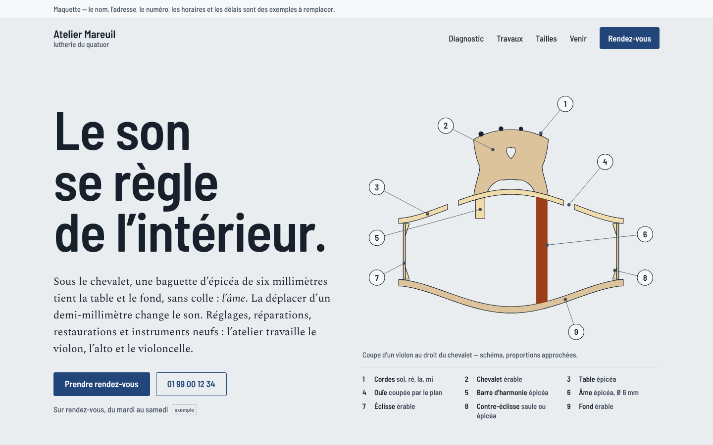
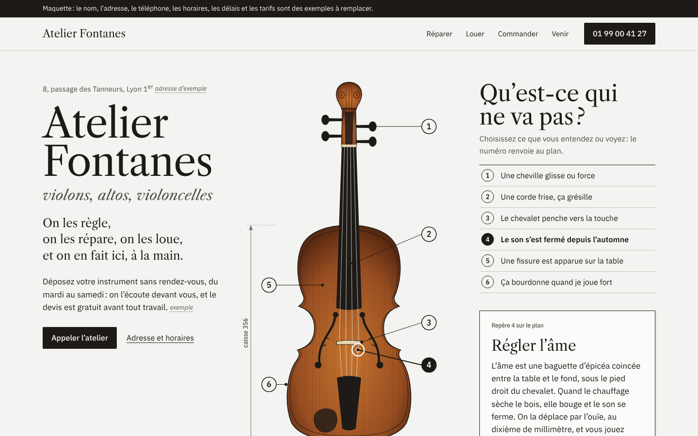

Vignettes de direction
Lire d’abord les images floutées : quelle position a une silhouette, un foyer et un rapport texte/image propres au sujet ? Puis les images nettes, à taille réelle. Garder une position, nommer la raison dans la trace, ne pas finir les autres.
390 px


1440 px

